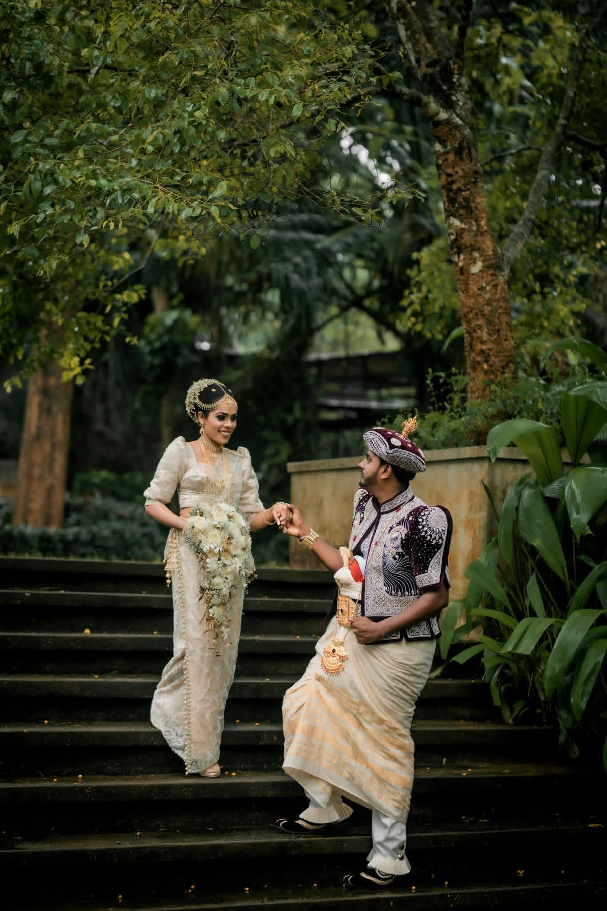
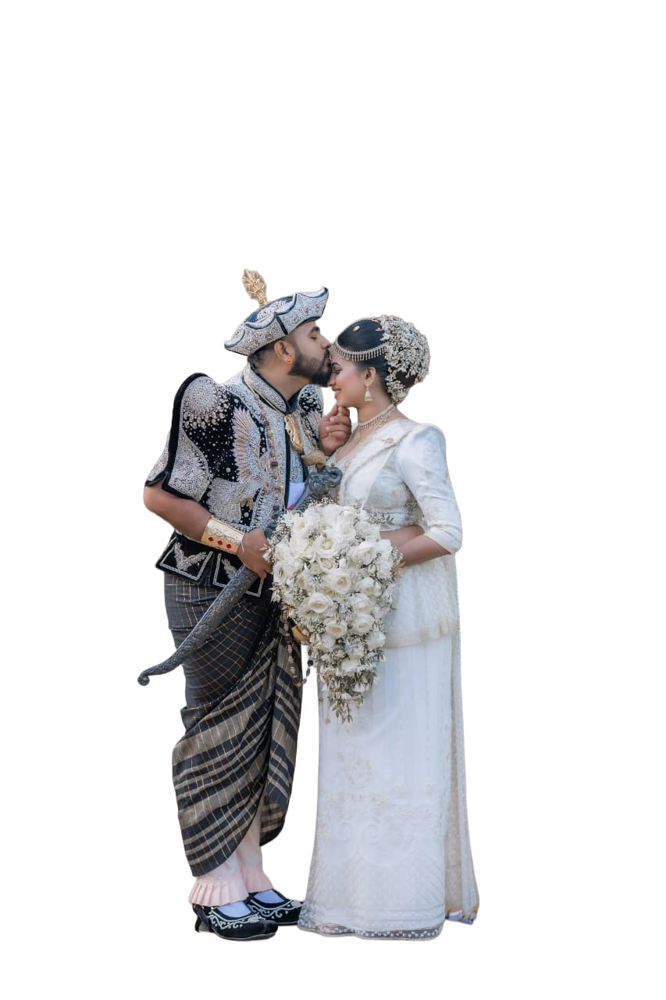
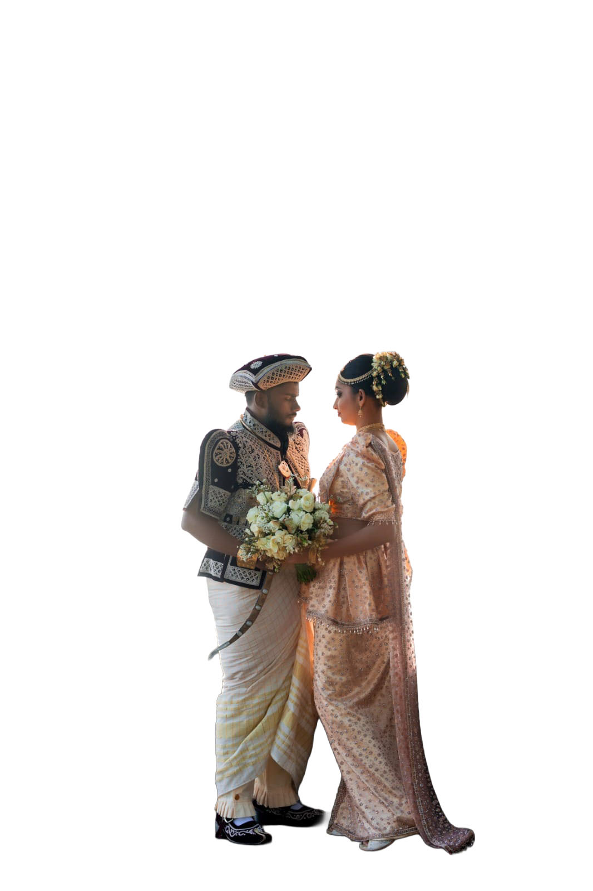
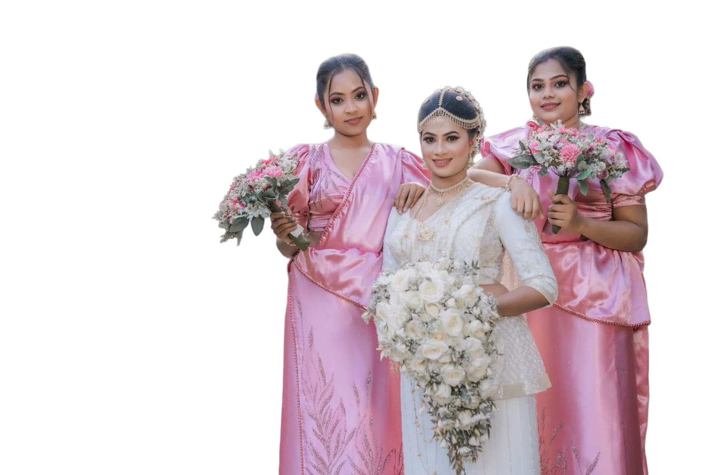

THE ART OF CELEBRATING
Love, woven
into every detail.
The quiet glances. The beautiful traditions. The people who make it everything.
A photographic celebration of love, here in Sri Lanka.
A Sri Lankan love story, in colour, texture and feeling
01 / THE GARDEN
Where love
takes its time.
Deep greens, soft ivory.
And a moment that belongs to two.


Explore this moment ↗ Explore this moment ↗
Explore this moment ↗ Explore this moment ↗
Explore this moment ↗ Explore this moment ↗
Explore this moment ↗02 / IN THE QUIET
A little closer.
A little more forever.
Ivory blooms, intricate details
and the gentlest kind of romance.
THE BEAUTY OF BELONGING
Held close.
Remembered forever.
A quiet kind of grandeur. The elegance of ivory, the scent of fresh flowers, and your favourite person beside you.

THE MOMENTS BETWEEN
Nothing else.
Just the two of you.
Beyond the ceremony and the celebration, there are moments that need no words. Make room for them.


Explore this moment ↗YOUR OWN KIND OF FOREVER
A promise.
A thousand feelings.
The traditions you carry. The future you imagine. A celebration that holds them both, beautifully.


Explore this moment ↗03 / LOVE, IN COLOUR
Rich in feeling.
Beautiful in every shade.
 Explore this moment ↗
Explore this moment ↗

Explore this moment ↗All the little things.
All the people you love.